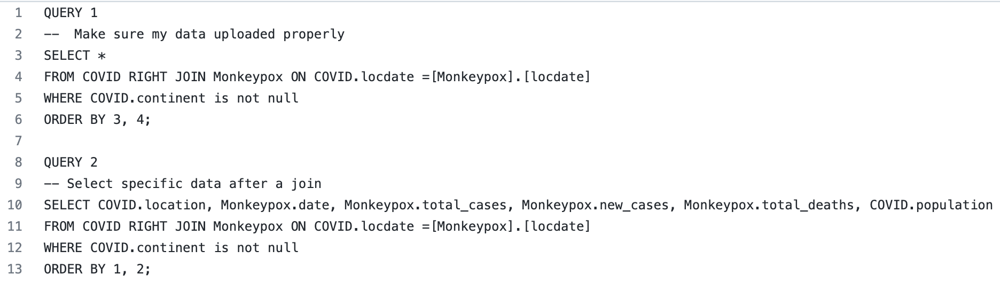
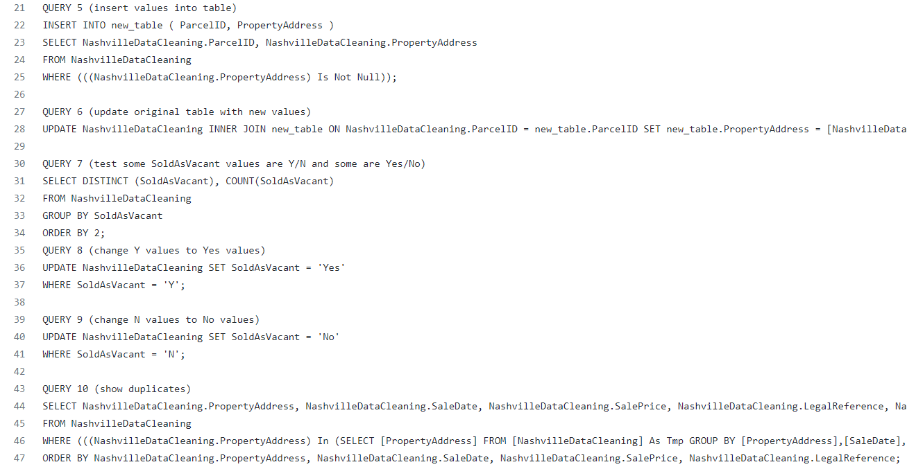
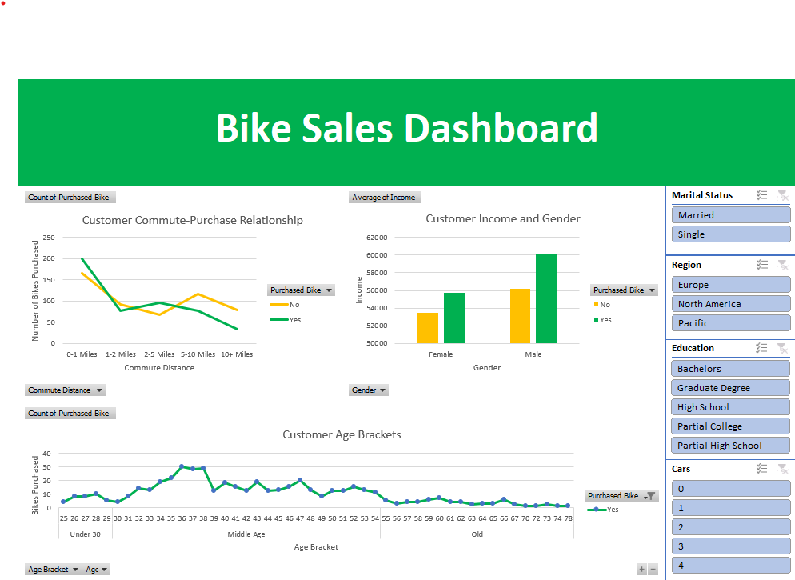
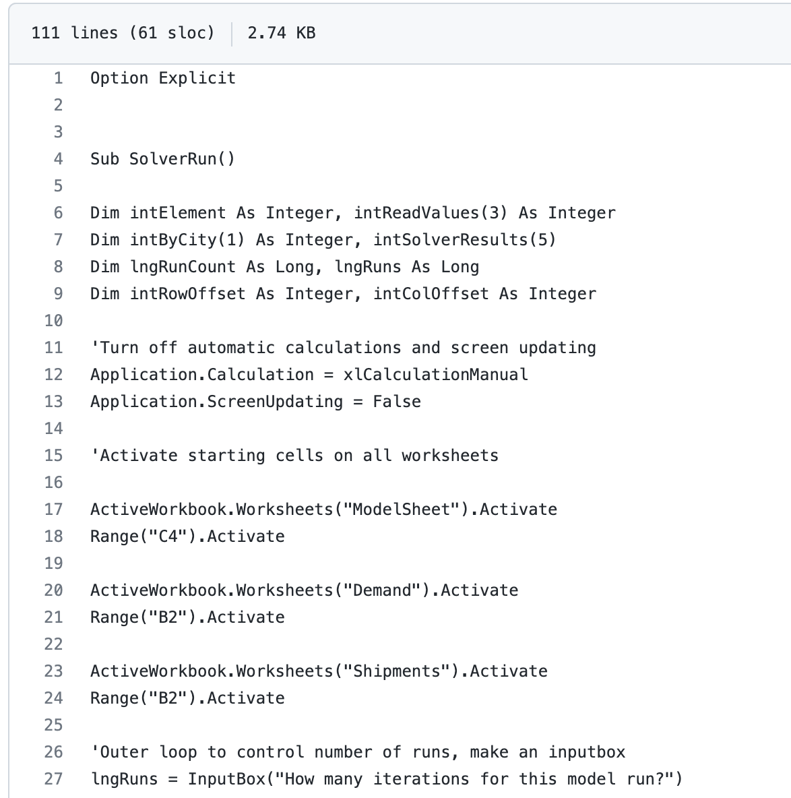
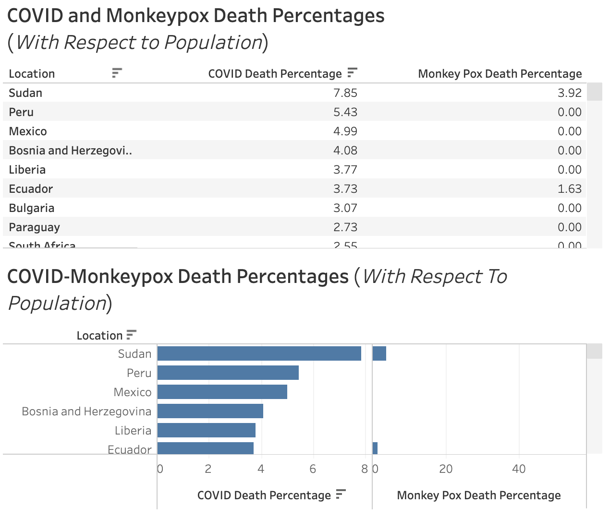

Used Excel and SQL to explore data about Monkeypox and COVID. The data is from
ourworldindata.org for Monkeypox and COVID from 10/15/22. I used Microsoft Access
to process this data. COVID data was used minimally, but I may delve further in
the future. I used Microsoft Excel to format/clean some data prior to Access, like to
add the “locdate” key to both datasets which I used to join the data.


This project was primarily cleaning a data set for real estate using SQL. There are 12 queries in total to standardize data formatting, populate null values, remove duplicate rows, and delete unused columns.

This Excel project included cleaning bicycle sales data (including data type changes and nested IF statments), analyzing the data using Pivot Tables, and creating a dashboard with slicers.

An interactable visualization/dashboard from Tableau using data from ourworldindata.com for COVID.

This is an Excel project using Macros, VBA, and the Solver Add-on to solve an issue regarding shipping efficiency.
.png)
Using the data from my SQL project from above, I made a basic dashboard with some information about Monkeypox. Some comparisons of COVID and Monkeypox are included.

I made a second dashboard with some data pulled from my SQL project. This dashboard focuses on the comparisons of COVID and Monkeypox death percentages per country with respect to country population.